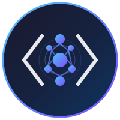

<!DOCTYPE html>
<html lang="en">
  <head>
    <title>CS 7180 Vibe Coding - AI-Assisted Software Engineering | Northeastern University Oakland, Spring 2026</title>
    <meta charset="utf-8">
    <meta name="description" content="CS 7180 Vibe Coding: Master AI-assisted development for Silicon Valley. Learn Claude, Antigravity, prompt engineering, TDD, and build portfolio-worthy applications.">
    <meta name="viewport" content="width=device-width, initial-scale=1, shrink-to-fit=no">
    <meta name="author" content="John Alexis Guerra Gómez">
    <link rel="icon" type="image/png" href="../../favicon.png">
    <link rel="apple-touch-icon" href="../../favicon.png">
    <meta property="og:type" content="website">
    <meta property="og:url" content="https://johnguerra.co/classes/aiCoding_spring_2026/">
    <meta property="og:title" content="CS 7180 Vibe Coding - AI-Assisted Software Engineering">
    <meta property="og:description" content="Master AI-assisted development for Silicon Valley. Learn Claude, Antigravity, prompt engineering, TDD, and build portfolio-worthy applications at Northeastern University Oakland.">
    <meta property="og:image" content="https://johnguerra.co/classes/aiCoding_spring_2026/logo.svg">
    <meta name="twitter:card" content="summary_large_image">
    <meta name="twitter:url" content="https://johnguerra.co/classes/aiCoding_spring_2026/">
    <meta name="twitter:title" content="CS 7180 Vibe Coding - AI-Assisted Software Engineering">
    <meta name="twitter:description" content="Master AI-assisted development for Silicon Valley. Learn Claude, Antigravity, prompt engineering, TDD, and build portfolio-worthy applications at Northeastern University Oakland.">
    <meta name="twitter:image" content="https://johnguerra.co/classes/aiCoding_spring_2026/logo.svg">
    <link href="https://cdn.jsdelivr.net/npm/bootstrap@5.3.3/dist/css/bootstrap.min.css" rel="stylesheet" integrity="sha384-QWTKZyjpPEjISv5WaRU9OFeRpok6YctnYmDr5pNlyT2bRjXh0JMhjY6hW+ALEwIH" crossorigin="anonymous">
    <link href="styles.css" rel="stylesheet">
  </head>
</html>
<body>
  <div class="wip-banner"><strong>Work in Progress</strong> — This page is under development. Details may change and the weekly schedule is tentative.</div>
  <div class="hero">
    <div class="container">
      <div class="row align-items-center">
        <div class="col-md-8">
          <div class="d-flex align-items-center mb-2">
            <h1 class="mb-0">CS 7180: Vibe Coding</h1>
          </div>
          <p class="tagline">AI-Assisted Software Engineering</p>
          <p class="lead">Master AI-assisted development for Silicon Valley. Build production apps with AI—the right way.</p>
          <div class="mt-3"><span class="badge bg-light text-dark me-2">Spring 2026</span><span class="badge bg-light text-dark me-2">Tue/Thu 3:00-4:40 PM PST</span><span class="badge bg-light text-dark me-2">Lucie Stern 27, Oakland</span><span class="badge bg-warning text-dark">Hybrid: In-Person + Zoom</span></div>
        </div>
        <div class="col-md-4 text-center"></div>
      </div>
    </div>
  </div>
  <div class="container">
    <nav class="nav nav-pills mb-4 justify-content-center"><a class="nav-link" href="#schedule">Schedule</a><a class="nav-link" href="#readings">Readings</a><a class="nav-link" href="#projects">Projects</a><a class="nav-link" href="#grading">Grading</a></nav>
    <div class="row mb-4">
      <div class="col-lg-8">
        <h3>Course Overview</h3>
        <p>This course trains master's level computer science students to become Silicon Valley-ready software engineers in the age of AI. Students will master AI-assisted development tools while maintaining professional engineering standards, learning to build high-quality, production-ready full-stack applications.</p>
        <p>Building successful software with AI requires more than good prompting—it demands understanding how Large Language Models work, when to use which tools, how to evaluate AI-generated code systematically, and how to integrate AI into professional development workflows.</p>
        <div class="alert alert-info mt-3"><strong>Hybrid Format:</strong> This course is offered in-person at Oakland Campus and via Zoom for remote students. The instructor has extensive experience teaching remotely, ensuring a great experience for all students regardless of location.</div>
        <h4 class="mt-4">Why This Course?</h4>
        <div class="row">
          <div class="col-md-6">
            <ul>
              <li><strong>Industry-Relevant</strong>: Tools and practices used in top tech companies</li>
              <li><strong>Portfolio-Focused</strong>: Build 3 prototype applications for your portfolio</li>
              <li><strong>Comprehensive</strong>: LLM fundamentals, prompt engineering, evals, TDD, CI/CD</li>
            </ul>
          </div>
          <div class="col-md-6">
            <ul>
              <li><strong>Balanced</strong>: Learn AI-assisted coding AND prove you can code without AI</li>
              <li><strong>Future-Proof</strong>: Master the workflow, not just current tools</li>
            </ul>
          </div>
        </div>
      </div>
      <div class="col-lg-4">
        <div class="card">
          <div class="card-body">
            <h5 class="card-title">Instructor</h5>
            <p class="mb-1"><a href="https://johnguerra.co">John Alexis Guerra Gómez</a></p>
            <p class="mb-1"><small><a id="email-link" href="#">[Enable JavaScript to see email]</a></small></p>
            <hr>
            <p class="mb-1"><strong>Office Hours</strong></p>
            <p class="mb-0">By appointment via Slack</p>
          </div>
        </div>
      </div>
    </div>
    <div class="row mb-4">
      <div class="col-12">
        <h3>The Three AI Modalities</h3>
        <p>Students will master three distinct AI coding paradigms:</p>
      </div>
      <div class="col-md-4">
        <div class="modality-card">
          <h5>Modality 1: Claude Web</h5>
          <p class="small mb-1"><strong>Best for:</strong> Architecture planning, learning, complex problem-solving</p>
          <p class="small mb-0"><strong>Skills:</strong> Claude Projects, artifacts, conversational iteration</p>
        </div>
      </div>
      <div class="col-md-4">
        <div class="modality-card">
          <h5>Modality 2: Antigravity</h5>
          <p class="small mb-1"><strong>Best for:</strong> Professional development, production code, daily workflow</p>
          <p class="small mb-0"><strong>Skills:</strong> Tab autocomplete, Composer, .antigravityrules, YOLO mode</p>
        </div>
      </div>
      <div class="col-md-4">
        <div class="modality-card">
          <h5>Modality 3: Claude Code</h5>
          <p class="small mb-1"><strong>Best for:</strong> Automation, multi-file refactoring, DevOps</p>
          <p class="small mb-0"><strong>Skills:</strong> Terminal workflows, autonomous agents, script automation</p>
        </div>
      </div>
    </div>
    <div class="row mb-4" id="projects">
      <div class="col-12">
        <h3>Portfolio Projects</h3>
        <p class="text-muted">All projects are open topic—you choose what to build after getting instructor approval.</p>
      </div>
      <div class="col-md-4">
        <div class="project-card">
          <h5>Project 1: Personal Utility App</h5>
          <p class="small">Build a personal utility application that solves a real problem validated through Mom Test interviews.</p>
          <ul class="small">
            <li>5+ user stories with CRUD operations</li>
            <li>Basic test suite (50%+ coverage)</li>
            <li>GitHub Actions CI pipeline</li>
            <li>Deployed and publicly accessible</li>
          </ul><span class="badge bg-secondary">15% of grade</span><span class="badge bg-info ms-1">Due Week 7</span>
        </div>
      </div>
      <div class="col-md-4">
        <div class="project-card">
          <h5>Project 2: Full-Stack Application</h5>
          <p class="small">Complete full-stack application using multiple AI modalities, Agile practices, TDD, and production-grade CI/CD.</p>
          <ul class="small">
            <li>User authentication (JWT/OAuth)</li>
            <li>Test-Driven Development (80%+ coverage)</li>
            <li>Comprehensive evaluation suite</li>
            <li>2 documented Agile sprints</li>
          </ul><span class="badge bg-secondary">20% of grade</span><span class="badge bg-info ms-1">Due Week 12</span>
        </div>
      </div>
      <div class="col-md-4">
        <div class="project-card">
          <h5>Project 3: Team Application</h5>
          <p class="small">Team of 2-3 building complex, production-grade application with advanced AI techniques.</p>
          <ul class="small">
            <li>Parallel agentic programming</li>
            <li>LLM-as-judge evaluation system</li>
            <li>Enterprise CI/CD & monitoring</li>
            <li>Security audit passed</li>
          </ul><span class="badge bg-secondary">20% of grade</span><span class="badge bg-info ms-1">Due Week 15</span>
        </div>
      </div>
    </div>
    <div class="row mb-4" id="schedule">
      <div class="col-md-7">
        <h3>Weekly Schedule</h3>
        <p class="small text-muted fst-italic">Schedule is tentative and subject to change.</p>
        <table class="table table-sm schedule-table">
          <thead>
            <tr>
              <th>Week</th>
              <th>Topics</th>
              <th>Slides</th>
            </tr>
          </thead>
          <tbody>
            <tr>
              <td>1</td>
              <td>Introduction</td>
              <td><a href="https://johnguerra.co/lectures/aiCoding_spring2026/01_Introduction/">Intro</a></td>
            </tr>
            <tr>
              <td>2</td>
              <td><strong>LLM Fundamentals</strong>, Mom Test & Design Thinking intro, Claude Web</td>
              <td><a href="https://johnguerra.co/lectures/aiCoding_spring2026/02_LLMs_fundamentals/">LLMs</a></td>
            </tr>
            <tr>
              <td>3</td>
              <td>Prompt Engineering, <strong>HW1 due</strong></td>
              <td><a href="https://johnguerra.co/lectures/aiCoding_spring2026/03_Prompt_Engineering/">Prompts</a></td>
            </tr>
            <tr>
              <td>4</td>
              <td>User Research & Prototyping, Mom Test Workshop</td>
              <td><a href="https://johnguerra.co/lectures/aiCoding_spring2026/04_User_Research_Prototyping/">Research</a></td>
            </tr>
            <tr>
              <td>5</td>
              <td>Modality 2: Antigravity, TDD Introduction, <strong>HW2 due</strong></td>
              <td></td>
            </tr>
            <tr>
              <td>6</td>
              <td>Antigravity Advanced, CI/CD Fundamentals</td>
              <td></td>
            </tr>
            <tr>
              <td>7</td>
              <td><strong>Project 1 Demos</strong>, Modality 3: Claude Code</td>
              <td></td>
            </tr>
            <tr>
              <td>8</td>
              <td>Advanced Prompt Engineering</td>
              <td></td>
            </tr>
            <tr>
              <td>9</td>
              <td>Context Engineering, <strong>HW3 due</strong></td>
              <td></td>
            </tr>
            <tr>
              <td>10</td>
              <td>Evaluations (Evals) Part 1</td>
              <td></td>
            </tr>
            <tr>
              <td>11</td>
              <td>TDD + CI/CD + Evals, <strong>HW4 due</strong></td>
              <td></td>
            </tr>
            <tr>
              <td>12</td>
              <td><strong>Project 2 Demos</strong>, Agile/Scrum with AI</td>
              <td></td>
            </tr>
            <tr>
              <td>13</td>
              <td>Parallel Agentic Programming</td>
              <td></td>
            </tr>
            <tr>
              <td>14</td>
              <td>Advanced Patterns + Production, <strong>HW5 due</strong>, <strong>HW6 due</strong></td>
              <td></td>
            </tr>
            <tr>
              <td>15</td>
              <td><strong>Demo Day - Final Project Presentations</strong></td>
              <td></td>
            </tr>
          </tbody>
        </table>
      </div>
      <div class="col-md-5" id="grading">
        <h3>Grading</h3>
        <table class="table">
          <thead>
            <tr>
              <th>Component</th>
              <th>%</th>
            </tr>
          </thead>
          <tbody>
            <tr>
              <td>Participation</td>
              <td>15%</td>
            </tr>
            <tr>
              <td>Weekly Quizzes</td>
              <td>10%</td>
            </tr>
            <tr>
              <td>Homeworks (6 assignments)</td>
              <td>25%</td>
            </tr>
            <tr>
              <td>Projects (3 major)</td>
              <td>50%</td>
            </tr>
          </tbody>
        </table>
        <h4 class="mt-4">Key Topics</h4>
        <ul class="small">
          <li>LLM Fundamentals & Limitations</li>
          <li>Multi-Modal AI Development</li>
          <li>Prompt & Context Engineering</li>
          <li>Evaluation Systems (Evals)</li>
          <li>Test-Driven Development with AI</li>
          <li>Professional CI/CD Pipelines</li>
          <li>Agile Practices with AI</li>
          <li>Parallel Agentic Programming</li>
        </ul>
      </div>
    </div>
    <div class="row mb-4">
      <div class="col-12">
        <h3>Technologies & Tools</h3>
      </div>
      <div class="col-md-6">
        <h5>Tech Stack</h5>
        <div><span class="tech-badge">React / Next.js</span><span class="tech-badge">Node.js / Express</span><span class="tech-badge">PostgreSQL / MongoDB</span><span class="tech-badge">Jest / Vitest</span><span class="tech-badge">Playwright / Cypress</span><span class="tech-badge">GitHub Actions</span><span class="tech-badge">TailwindCSS</span><span class="tech-badge">TypeScript</span></div>
      </div>
      <div class="col-md-6">
        <h5>Required Tools</h5>
        <ul class="small">
          <li><strong>Antigravity</strong> (free)</li>
          <li><strong>Claude.ai account</strong> (Pro recommended, $20/month)</li>
          <li>GitHub account</li>
          <li>Node.js 18+ and npm</li>
          <li>Git</li>
        </ul>
      </div>
    </div>
    <div class="row mb-4">
      <div class="col-md-6">
        <h3>Required Books</h3>
        <ul>
          <li><strong>The Mom Test</strong> by Rob Fitzpatrick</li>
          <li><strong>Scrum</strong> by Jeff Sutherland</li>
        </ul>
        <h5 class="mt-2">Recommended</h5>
        <ul>
          <li><strong>Designing for Growth</strong> by Liedtka & Ogilvie</li>
        </ul>
      </div>
      <div class="col-md-6">
        <h3>Resources</h3>
        <ul>
          <li><a href="https://docs.anthropic.com">Anthropic Claude Docs</a></li>
          <li><a href="https://antigravity.google/docs/get-started">Antigravity Documentation</a></li>
          <li><a href="https://docs.github.com/copilot">GitHub Copilot Guide</a></li>
        </ul>
      </div>
    </div>
    <div class="row mb-4" id="readings">
      <div class="col-12">
        <h3>Required Readings & Resources</h3>
        <p class="small text-muted">Organized by week. Click to expand each section.</p>
        <div class="accordion" id="readingsAccordion">
          <div class="accordion-item">
            <h2 class="accordion-header">
              <button class="accordion-button collapsed" type="button" data-bs-toggle="collapse" data-bs-target="#week2" aria-expanded="false">Week 2: LLM Fundamentals</button>
            </h2>
            <div class="accordion-collapse collapse" id="week2" data-bs-parent="#readingsAccordion">
              <div class="accordion-body">
                <h6>Required Viewing</h6>
                <ul class="small">
                  <li><a href="https://www.3blue1brown.com/lessons/neural-networks">But what is a Neural Network?</a> (19 min) - 3Blue1Brown</li>
                  <li><a href="https://www.3blue1brown.com/lessons/gradient-descent">Gradient descent, how neural networks learn</a> (21 min) - 3Blue1Brown</li>
                  <li><a href="https://www.3blue1brown.com/lessons/attention">Attention in transformers, step-by-step</a> (27 min) - 3Blue1Brown</li>
                </ul>
                <h6>Recommended</h6>
                <ul class="small">
                  <li><a href="https://jalammar.github.io/illustrated-transformer/">The Illustrated Transformer</a> - Jay Alammar</li>
                  <li><a href="https://karpathy.ai/zero-to-hero.html">Let's build GPT: from scratch, in code</a> (1h 56m) - Andrej Karpathy</li>
                </ul>
                <h6>Interactive Tools</h6>
                <ul class="small">
                  <li><a href="https://tiktokenizer.vercel.app/">Tiktokenizer</a> - Visualize how text tokenizes</li>
                  <li><a href="https://platform.openai.com/tokenizer">OpenAI Tokenizer</a> - Official token counter</li>
                </ul>
              </div>
            </div>
          </div>
          <div class="accordion-item">
            <h2 class="accordion-header">
              <button class="accordion-button collapsed" type="button" data-bs-toggle="collapse" data-bs-target="#week3" aria-expanded="false">Week 3: Prompt Engineering</button>
            </h2>
            <div class="accordion-collapse collapse" id="week3" data-bs-parent="#readingsAccordion">
              <div class="accordion-body">
                <h6>Required</h6>
                <ul class="small">
                  <li><a href="https://platform.claude.com/docs/en/build-with-claude/prompt-engineering/claude-4-best-practices">Claude 4 Best Practices</a> - Anthropic Docs</li>
                  <li><a href="https://docs.anthropic.com/en/docs/build-with-claude/prompt-engineering/overview">Prompt Engineering Overview</a> - Anthropic Docs</li>
                  <li><a href="https://github.com/anthropics/courses/tree/master/prompt_engineering_interactive_tutorial">Prompt Engineering Interactive Tutorial</a> - Anthropic (9 chapters)</li>
                  <li><a href="https://docs.anthropic.com/en/resources/prompt-library/library">Prompt Library</a> - Anthropic</li>
                </ul>
                <h6>Recommended</h6>
                <ul class="small">
                  <li><a href="https://github.com/anthropics/courses/tree/master/real_world_prompting">Real World Prompting Course</a> - Anthropic</li>
                </ul>
              </div>
            </div>
          </div>
          <div class="accordion-item">
            <h2 class="accordion-header">
              <button class="accordion-button collapsed" type="button" data-bs-toggle="collapse" data-bs-target="#week4" aria-expanded="false">Week 4: User Research & Prototyping</button>
            </h2>
            <div class="accordion-collapse collapse" id="week4" data-bs-parent="#readingsAccordion">
              <div class="accordion-body">
                <h6>Required</h6>
                <ul class="small">
                  <li><a href="https://support.claude.com/en/articles/11649427-use-artifacts-to-visualize-and-create-ai-apps-without-ever-writing-a-line-of-code">Claude Artifacts Guide</a> - Creating interactive apps without code</li>
                  <li><a href="https://platform.claude.com/docs/en/build-with-claude/context-windows">Context Windows</a> - How Claude's working memory works</li>
                  <li><a href="https://support.claude.com/en/articles/9517075-what-are-projects">What Are Projects?</a> - Persistent knowledge bases for Claude Web</li>
                </ul>
                <h6>Required Books</h6>
                <ul class="small">
                  <li><strong>The Mom Test</strong> by Rob Fitzpatrick</li>
                </ul>
                <h6>Recommended</h6>
                <ul class="small">
                  <li><a href="https://support.claude.com/en/articles/9519177-how-can-i-create-and-manage-projects">How to Create and Manage Projects</a> - Step-by-step guide</li>
                  <li><a href="https://support.claude.com/en/articles/11473015-retrieval-augmented-generation-rag-for-projects">RAG for Projects</a> - Retrieval-augmented generation in Claude Projects</li>
                  <li><a href="https://support.claude.com/en/articles/10185728-understanding-claude-s-personalization-features">Personalization Features</a> - Profile, instructions, and styles</li>
                  <li><strong>Designing for Growth</strong> by Liedtka & Ogilvie</li>
                </ul>
              </div>
            </div>
          </div>
          <div class="accordion-item">
            <h2 class="accordion-header">
              <button class="accordion-button collapsed" type="button" data-bs-toggle="collapse" data-bs-target="#week5" aria-expanded="false">Weeks 5-6: Antigravity IDE & TDD</button>
            </h2>
            <div class="accordion-collapse collapse" id="week5" data-bs-parent="#readingsAccordion">
              <div class="accordion-body">
                <h6>Required</h6>
                <ul class="small">
                  <li><a href="https://antigravity.google/docs/get-started">Antigravity Documentation</a> - Official Docs</li>
                  <li><a href="https://jestjs.io/docs/getting-started">Jest Documentation</a> - Testing</li>
                  <li><a href="https://vitest.dev/guide/">Vitest Documentation</a> - Testing</li>
                </ul>
              </div>
            </div>
          </div>
          <div class="accordion-item">
            <h2 class="accordion-header">
              <button class="accordion-button collapsed" type="button" data-bs-toggle="collapse" data-bs-target="#week7" aria-expanded="false">Week 7: Claude Code & Terminal AI</button>
            </h2>
            <div class="accordion-collapse collapse" id="week7" data-bs-parent="#readingsAccordion">
              <div class="accordion-body">
                <h6>Required</h6>
                <ul class="small">
                  <li><a href="https://docs.anthropic.com/en/docs/claude-code">Claude Code Documentation</a> - Anthropic</li>
                  <li><a href="https://github.com/anthropics/courses">Anthropic Tool Use Course</a></li>
                </ul>
              </div>
            </div>
          </div>
          <div class="accordion-item">
            <h2 class="accordion-header">
              <button class="accordion-button collapsed" type="button" data-bs-toggle="collapse" data-bs-target="#week8" aria-expanded="false">Weeks 8-9: Advanced Prompting & Context Engineering</button>
            </h2>
            <div class="accordion-collapse collapse" id="week8" data-bs-parent="#readingsAccordion">
              <div class="accordion-body">
                <h6>Required</h6>
                <ul class="small">
                  <li><a href="https://docs.anthropic.com/en/docs/build-with-claude/extended-thinking">Extended Thinking</a> - Anthropic</li>
                  <li><a href="https://docs.anthropic.com/en/docs/build-with-claude/prompt-engineering/chain-prompts">Prompt Chaining Guide</a> - Anthropic</li>
                </ul>
                <h6>Reference (Anthropic Research)</h6>
                <ul class="small">
                  <li><a href="https://www.anthropic.com/research/mapping-mind-language-model">Mapping the Mind of a Large Language Model</a></li>
                  <li><a href="https://www.anthropic.com/research/tracing-thoughts-language-model">Tracing the Thoughts of a Large Language Model</a></li>
                </ul>
              </div>
            </div>
          </div>
          <div class="accordion-item">
            <h2 class="accordion-header">
              <button class="accordion-button collapsed" type="button" data-bs-toggle="collapse" data-bs-target="#week10" aria-expanded="false">Weeks 10-11: Evaluations (Evals)</button>
            </h2>
            <div class="accordion-collapse collapse" id="week10" data-bs-parent="#readingsAccordion">
              <div class="accordion-body">
                <h6>Required</h6>
                <ul class="small">
                  <li><a href="https://github.com/anthropics/courses">Anthropic Prompt Evaluations Course</a></li>
                  <li><a href="https://github.com/openai/human-eval">HumanEval Benchmark</a> - OpenAI</li>
                </ul>
                <h6>Reference</h6>
                <ul class="small">
                  <li><a href="https://aclanthology.org/2025.findings-acl.686/">HumanEval Pro</a> - ACL 2025</li>
                  <li><a href="https://cset.georgetown.edu/publication/cybersecurity-risks-of-ai-generated-code/">Cybersecurity Risks of AI-Generated Code</a> - Georgetown CSET</li>
                </ul>
              </div>
            </div>
          </div>
          <div class="accordion-item">
            <h2 class="accordion-header">
              <button class="accordion-button collapsed" type="button" data-bs-toggle="collapse" data-bs-target="#week14" aria-expanded="false">Week 14: Production & CI/CD</button>
            </h2>
            <div class="accordion-collapse collapse" id="week14" data-bs-parent="#readingsAccordion">
              <div class="accordion-body">
                <h6>Required</h6>
                <ul class="small">
                  <li><a href="https://docs.github.com/en/actions">GitHub Actions Documentation</a></li>
                  <li><a href="https://vercel.com/docs">Vercel Deployment Docs</a></li>
                </ul>
                <h6>Security</h6>
                <ul class="small">
                  <li><a href="https://best.openssf.org/Security-Focused-Guide-for-AI-Code-Assistant-Instructions">OpenSSF AI Code Security Guide</a></li>
                  <li><a href="https://owasp.org/www-project-top-ten/">OWASP Top 10</a></li>
                </ul>
              </div>
            </div>
          </div>
        </div>
      </div>
    </div>
    <div class="row mb-5">
      <div class="col-12">
        <h3>Communication</h3>
        <p><strong>Slack</strong> is the main communication channel for this course. Canvas is used for assignment submissions and grades.</p>
        <p class="small text-muted">This course <strong>requires AI tool use</strong> but with strict guidelines: document all AI usage, understand all code submitted, never commit code you cannot explain. Weekly quizzes test conceptual understanding.</p>
      </div>
    </div>
    <hr>
    <div class="row mb-4">
      <div class="col-12 text-center text-muted"><small>CS 7180: Special Topics in AI | Northeastern University Oakland | Spring 2026</small><br><small>Vibe Coded with ❤️ by <a href="https://johnguerra.co">John</a></small></div>
    </div>
  </div>
  <script src="https://cdn.jsdelivr.net/npm/bootstrap@5.3.3/dist/js/bootstrap.bundle.min.js" integrity="sha384-YvpcrYf0tY3lHB60NNkmXc5s9fDVZLESaAA55NDzOxhy9GkcIdslK1eN7N6jIeHz" crossorigin="anonymous"></script>
  <script>
    (function(i,s,o,g,r,a,m){i['GoogleAnalyticsObject']=r;i[r]=i[r]||function(){
      (i[r].q=i[r].q||[]).push(arguments)},i[r].l=1*new Date();a=s.createElement(o),
      m=s.getElementsByTagName(o)[0];a.async=1;a.src=g;m.parentNode.insertBefore(a,m)
    })(window,document,'script','//www.google-analytics.com/analytics.js','ga');
    ga('create', 'UA-72531610-1', 'auto');
    ga('send', 'pageview');
    
    // Anti-spam email
    (function() {
      var u = 'jguerra';
      var d = 'northeastern.edu';
      var e = u + '@' + d;
      var link = document.getElementById('email-link');
      if (link) {
        link.href = 'mailto:' + e;
        link.textContent = e;
      }
    })();
  </script>
</body>